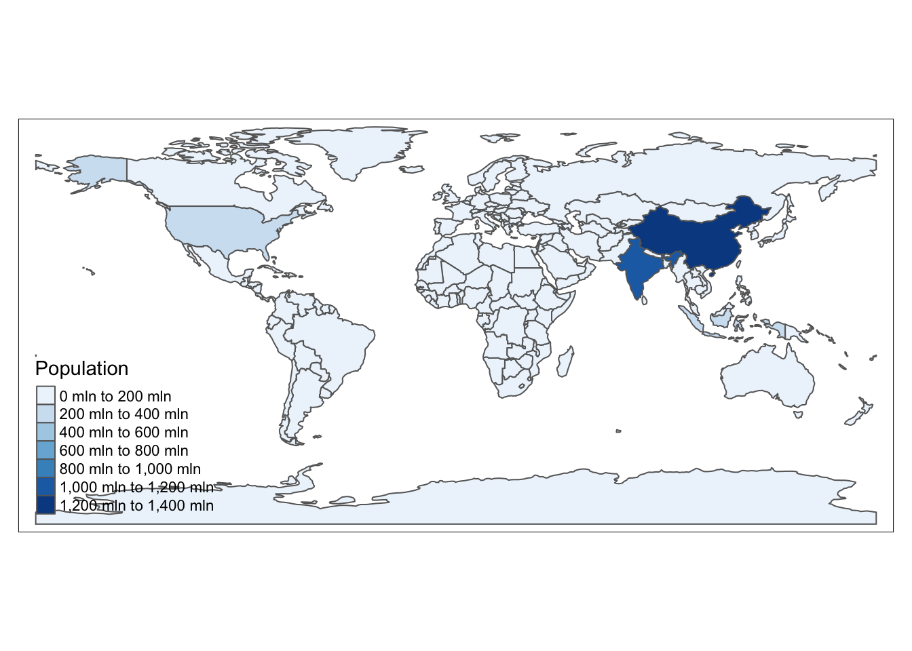
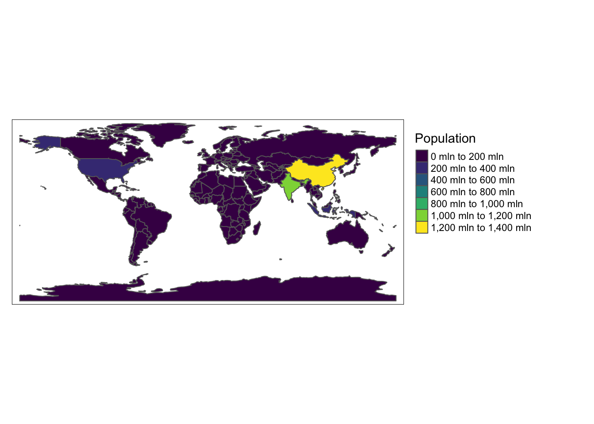
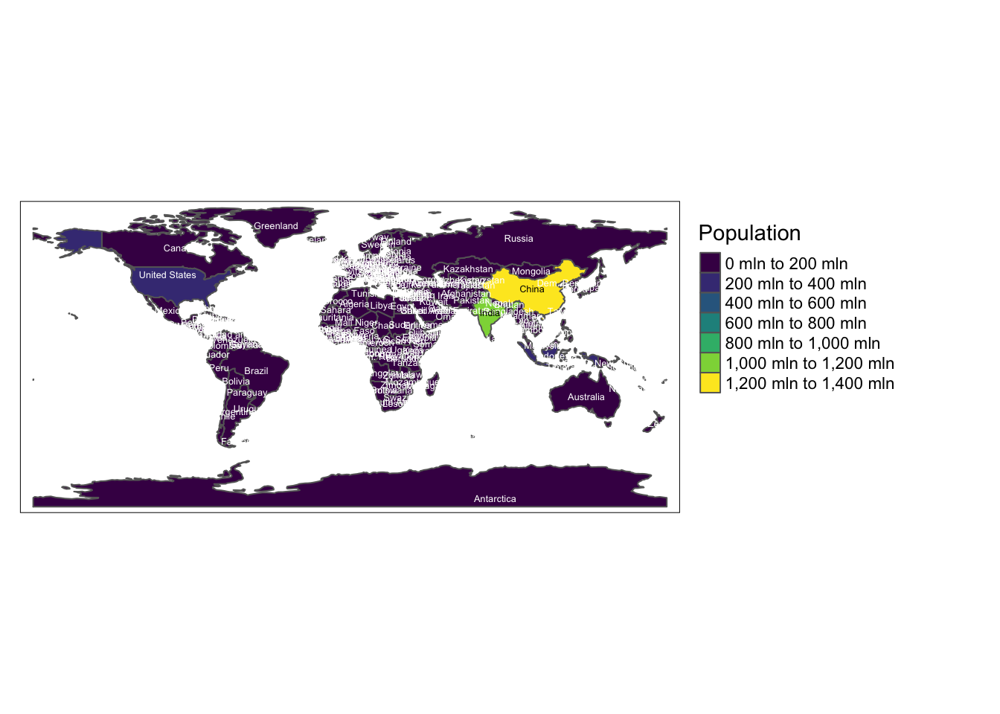

Introduction to tmap
The tmap package is a powerful tool
for creating thematic maps in R. It provides an intuitive and flexible
way to visualize spatial data, similar to how ggplot2 works
for general data visualization.
Libraries and dataset
First, let’s install and load the tmap package. We’ll use the built-in
World dataset for our examples.
Basic Concept: Layers
The main concept in tmap is building
maps using layers. You start with tm_shape() to define the
data, then add layers with various tm_*() functions.
Let’s create a simple world map:

This creates a basic world map where each country is a polygon.
Adding Data to the Map
We can add data to our map by specifying a variable in
tm_polygons():

Here, we’re coloring countries based on their population estimates.
Customizing the Map
tmap offers many ways to customize your map. Let’s add borders and adjust the color palette:
tm_shape(World) +
tm_polygons("pop_est", palette = "viridis", title = "Population") +
tm_borders(col = "white", lwd = 0.5) +
tm_layout(legend.outside = TRUE)
Adding Multiple Layers
We can add multiple layers to our map. Let’s add country names:
tm_shape(World) +
tm_polygons("pop_est", palette = "viridis", title = "Population") +
tm_borders(col = "white", lwd = 0.5) +
tm_text("name", size = 0.4) +
tm_layout(legend.outside = TRUE)
Interactive Maps
tmap can create both static and interactive maps. To switch to interactive mode:
tmap_mode("view")
my_tmap <- tm_shape(World) +
tm_polygons("pop_est", palette = "viridis", title = "Population")
tmap_save(my_tmap, filename = "HtmlWidget/416-introduction-to-tmap-interactive.html")Remember to switch back to plot mode for static maps:
Conclusion
This introduction covered the basics of creating thematic maps with tmap. The package offers many more features for creating complex and informative maps. As you become more comfortable with these basics, you can explore more advanced features like faceting, small multiples, and custom projections.